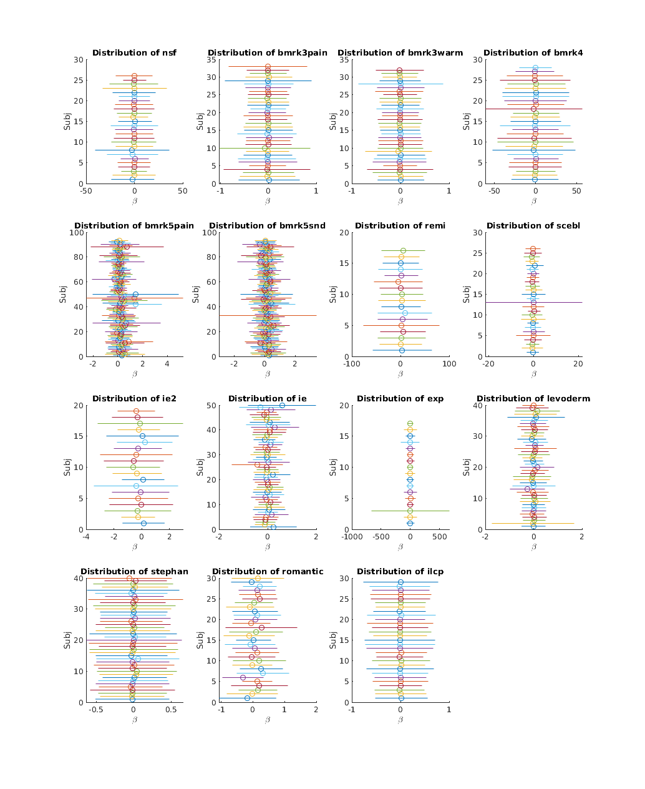
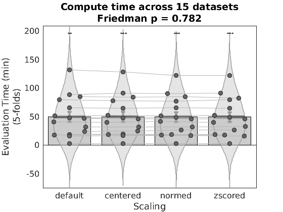

Contents
close all; clear all; t99 = tic; warning('off','all'); addpath(genpath('/projects/bope9760/CanlabCore/CanlabCore')); addpath(genpath('/projects/bope9760/spm12')); addpath(genpath('/projects/bope9760/single_trials_overview/repo')); % single_trials repo addpath('/work/ics/data/projects/wagerlab/labdata/projects/canlab_single_trials_for_git_repo/'); % single trial data on blanca st_datasets = {'nsf','bmrk3pain','bmrk3heat','bmrk4','bmrk5pain',... 'bmrk5snd','remi','scebl','ie2','ie','exp','levoderm','stephan',... 'romantic','ilcp'};
INTRODUCTION
This page demonstrates how to use the single trials dataset to formallycompare algorithm performance, using the borderline trivial case ofcomparing performance under different rescaling procedures. It is simpleto implement, and despite its conceptual simplicity is an unanswered question as of the time of this writing.
Single trial coefficients vary considerably across studies in systematicways. Although different experimental conditions are expected to yeilddifferent coefficient maps, there are considerable differences in thebasic statistical features of these maps across studies which are morelikely due to differences in statistical design than experimental design,and are thus unintended artifacts of the analysis procedure. In order to predict outcomes in one study based on models fit in another study we need to minimize variation due to statistical design choices, inparticular spurious differenes in the statistical properties of thesecoefficients.
Additionally, parametric statistical maps in fMRI often use arbitrary units. Not only is the scale of outcome measures often arbitrary (forinstance a pain rating scale might vary form 0-8 or 0-100. There may beanchors throughout the scale or only at the ends, it might be logarithmicor it might be linear; there are few conventions), but the preditor (the BOLD signal) is also not a reliable absolute measure (the situation might be different with something like arterial spin labeling). This suggests the scale of the parametric map (which is typically in unis of DV/IV) might be arbitrary.
Studies with similar task conditions often show differences in the magnitude (mean and variance) of coefficient estimates, leading to use of mean centering trials, l2-norming trials or z-scoring trials, in an attempt to correct for these artifacts. However, whether these scalingprocedures remove task relevant biological information or not remains an open empirical question.
Here we use 5-fold cross validation in each of 15 datasets to establishwhether within study predictive accuracy is improved or harmed by any ofthese three scaling procedures. The presumption is that within study thestatistical design is invariant, and any change in performance due tothese scaling procedures can therefore be attributed to a loss ofsensitivity for biologically meaningful consequences of the experimentaldesign. By examining 15 datasets we can informally differentiate variantion in performance due to chance, vs. systematic differences dueto scaling choices, and thereby inform application of these scalingprocedures to future MVPA decoding methods.
We use SVR as a method of MVPA based brain decoding, but similar resultswould be expected with many other linear machine learning algorithms(e.g. PCR). SVR is simply used for its performance advantage.
% import studies, suppressing output to minimize clutter (it's long and % redundant with more detailed information we provide below) cmd = 'all_dat = load_image_set(''all_single_trials'')'; fprintf('cmd: %s\n',cmd); evalc(cmd); n_studies = length(st_datasets); study_id = all_dat.metadata_table.study_id; [uniq_study_id, ~, study_id] = unique(study_id,'rows','stable');
cmd: all_dat = load_image_set('all_single_trials')
Study descriptive statistics
notice how across studies each subject shows different mean (circle) and standard deviations (whiskers). Note the x-axis scales. For a model fit to one of these studies to make accurate prediction in a different study with a different \beta domain, the model would need to successfully extrapolate to that different \beta domain outside of its training space. This has very low probability of success, since our models are all linear approximations of the brain response, which is in all likelihood intrinsically nonlinear.
Thus, we have no hope of obtaining accurate absolute predictions in any other study if these \beta effects are task relevant and biologically meaningful. If they are artifacts of statistical design then it should be possible to approximately correct for them using rescaling procedures.
Raw data
figure; for i = 1:n_studies this_idx = find(i == study_id); this_dat = all_dat.get_wh_image(this_idx); subject_id = this_dat.metadata_table.subject_id; [uniq_subject_id, ~, subject_id] = unique(subject_id,'rows','stable'); subplot(ceil(sqrt(n_studies)), ceil(n_studies/ceil(sqrt(n_studies))), i); hold off for j = 1:length(uniq_subject_id) subj_idx = j == subject_id; this_subj_dat = this_dat.dat(:,subj_idx); q(j,:) = quantile(this_subj_dat(:),[0.025,0.5,0.975]); mu = mean(mean(this_subj_dat(:))); sd = std(this_subj_dat(:)); h1 = plot([mu-sd, mu+sd],[j,j],'-'); hold on; h2 = plot(mu,j,'o'); h2.Color = h1.Color; end box off title(['Distribution of ', uniq_study_id{i}]); xlabel('\beta'); ylabel('Subj'); end p = get(gcf,'Position'); set(gcf,'Position',[p(1:2),1024,2048]);
effect of centering
figure; for i = 1:n_studies this_idx = find(i == study_id); this_dat = all_dat.get_wh_image(this_idx); this_dat = this_dat.rescale('centerimages'); subject_id = this_dat.metadata_table.subject_id; [uniq_subject_id, ~, subject_id] = unique(subject_id,'rows','stable'); subplot(ceil(sqrt(n_studies)), ceil(n_studies/ceil(sqrt(n_studies))), i); hold off for j = 1:length(uniq_subject_id) subj_idx = j == subject_id; this_subj_dat = this_dat.dat(:,subj_idx); q(j,:) = quantile(this_subj_dat(:),[0.025,0.5,0.975]); mu = mean(mean(this_subj_dat(:))); sd = std(this_subj_dat(:)); h1 = plot([mu-sd, mu+sd],[j,j],'-'); hold on; h2 = plot(mu,j,'o'); h2.Color = h1.Color; end box off title(['Distribution of ', uniq_study_id{i}]); xlabel('\beta'); ylabel('Subj'); end p = get(gcf,'Position'); set(gcf,'Position',[p(1:2),1024,2048]);

effect of l2norming
figure; for i = 1:n_studies this_idx = find(i == study_id); this_dat = all_dat.get_wh_image(this_idx); this_dat = this_dat.rescale('l2norm_images'); subject_id = this_dat.metadata_table.subject_id; [uniq_subject_id, ~, subject_id] = unique(subject_id,'rows','stable'); subplot(ceil(sqrt(n_studies)), ceil(n_studies/ceil(sqrt(n_studies))), i); hold off for j = 1:length(uniq_subject_id) subj_idx = j == subject_id; this_subj_dat = this_dat.dat(:,subj_idx); q(j,:) = quantile(this_subj_dat(:),[0.025,0.5,0.975]); mu = mean(mean(this_subj_dat(:))); sd = std(this_subj_dat(:)); h1 = plot([mu-sd, mu+sd],[j,j],'-'); hold on; h2 = plot(mu,j,'o'); h2.Color = h1.Color; end box off title(['Distribution of ', uniq_study_id{i}]); xlabel('\beta'); ylabel('Subj'); end p = get(gcf,'Position'); set(gcf,'Position',[p(1:2),1024,2048]);
effect of zscoring
figure; for i = 1:n_studies this_idx = find(i == study_id); this_dat = all_dat.get_wh_image(this_idx); this_dat = this_dat.rescale('zscoreimages'); subject_id = this_dat.metadata_table.subject_id; [uniq_subject_id, ~, subject_id] = unique(subject_id,'rows','stable'); subplot(ceil(sqrt(n_studies)), ceil(n_studies/ceil(sqrt(n_studies))), i); hold off for j = 1:length(uniq_subject_id) subj_idx = j == subject_id; this_subj_dat = this_dat.dat(:,subj_idx); q(j,:) = quantile(this_subj_dat(:),[0.025,0.5,0.975]); mu = mean(mean(this_subj_dat(:))); sd = std(this_subj_dat(:)); h1 = plot([mu-sd, mu+sd],[j,j],'-'); hold on; h2 = plot(mu,j,'o'); h2.Color = h1.Color; end box off title(['Distribution of ', uniq_study_id{i}]); xlabel('\beta'); ylabel('Subj'); end p = get(gcf,'Position'); set(gcf,'Position',[p(1:2),1024,2048]);

METHODS
compute raw data, centered, l2normed and zscored images for continuous outcome prediction statistics. Fit SVR models to each, and compute 5-fold cross validated predictions of outcomes. See RESULTS comments for subsequent statistical design methodology.
% we don't have the memory to keep all studies in RAM at once for this next % step, so we clear them and will process one study at a time clear all_dat % get numeric study_id labels n_studies = length(st_datasets); [d_cverr, c_cverr, l2_cverr, z_cverr,... d_t, c_t, l2_t, z_t] = deal(zeros(n_studies,1)); [d_stats, d_optout, ... c_stats, c_optout, ... l2_stats, l2_optout, ... z_stats, z_optout] = deal(cell(n_studies,1)); if ~isempty(gcp('nocreate')) delete(gcp('nocreate')); end parpool(4) % run each algorithm on each study and save results parfor i = 1:n_studies warning('off','all'); fprintf('Evaluating study %s\n',st_datasets{i}); this_study = st_datasets{i}; this_dat = load_image_set(this_study); % this is where you quartile the data if you want that % for completion datasets retain trials with invalid responses, so % remove them this_dat = this_dat.get_wh_image(~isnan(this_dat.Y)); % this can be removed after dataset update this_dat = this_dat.remove_empty; for j = 1:size(this_dat.dat,2) this_dat.dat(isnan(this_dat.dat(:,j)),1) = 0; end % zscore outcome for more interpretable values of prediction MSE % and for easier comparison across studies (which use different outcome % scales otherwise) this_dat.Y = zscore(this_dat.Y); % manually select CV folds to % a) ensure subjects aren't split across test folds (required for % independence assumptions to be satisifed in CV) % b) keep folds the same across algorithms (to reduce slicing % related variance) [~,~,subject_id] = unique(char(this_dat.metadata_table.subject_id),'rows','stable'); cv = cvpartition2(ones(size(this_dat.dat,2),1), 'KFOLD', 5, 'Stratify', subject_id); fold_labels = zeros(size(this_dat.dat,2),1); for j = 1:cv.NumTestSets fold_labels(cv.test(j)) = j; end this_dat_c = this_dat.rescale('centerimages'); this_dat_l2 = this_dat.rescale('l2norm_images'); this_dat_z = this_dat.rescale('zscoreimages'); % default t0 = tic; [d_cverr(i), d_stats{i}, d_optout{i}] = predict(this_dat, 'algorithm_name', 'cv_svr', ... 'nfolds', fold_labels, 'error_type', 'mse', 'useparallel', 0); d_t(i) = toc(t0); % centered t0 = tic; [c_cverr(i), c_stats{i}, c_optout{i}] = predict(this_dat_c, 'algorithm_name', 'cv_svr', ... 'nfolds', fold_labels, 'error_type', 'mse', 'useparallel', 0); c_t(i) = toc(t0); % l2normed t0 = tic; [l2_cverr(i), l2_stats{i}, l2_optout{i}] = predict(this_dat_l2, 'algorithm_name', 'cv_svr', ... 'nfolds', fold_labels, 'error_type', 'mse', 'useparallel', 0); l2_t(i) = toc(t0); % zscored t0 = tic; [z_cverr(i), z_stats{i}, z_optout{i}] = predict(this_dat_z, 'algorithm_name', 'cv_svr', ... 'nfolds', fold_labels, 'error_type', 'mse', 'useparallel', 0); z_t(i) = toc(t0); end
Parallel pool using the 'local' profile is shutting down.
Starting parallel pool (parpool) using the 'local' profile ...
connected to 4 workers.
ans =
Pool with properties:
Connected: true
NumWorkers: 4
Cluster: local
AttachedFiles: {}
AutoAddClientPath: true
IdleTimeout: 360 minutes (360 minutes remaining)
SpmdEnabled: true
Evaluating study nsf
Evaluating study bmrk3pain
Evaluating study bmrk4
Evaluating study bmrk5snd
Source: NSF data aggregated from Tor Wager's single trials Google Drive
____________________________________________________________________________________________________________________________________________
Wager, et al. (2013) New England Journal of Medicine
Atlas, et al. (2014) Pain
____________________________________________________________________________________________________________________________________________
Summary of dataset
______________________________________________________
Images: 1149 Nonempty: 1149 Complete: 1149
Voxels: 329694 Nonempty: 329694 Complete: 328249
Unique data values: 136162680
Min: -1312.863 Max: 888.306 Mean: -0.351 Std: 21.183
Percentiles Values
___________ __________
0.1 -134.41
0.5 -81.216
1 -63.577
5 -31.933
25 -8.2459
50 3.1861e-06
75 8.286
95 29.963
99 56.493
99.5 70.713
99.9 112.42
Pain ratings in image_obj.Y
Additional metadata in image_obj.additional_info struct
Loaded images:
Cross-validated prediction with algorithm cv_svr, 5 folds
Completed fit for all data in: 0 hours 2 min 38 secs
Source: bmrk5snd data from wagerlab/labdata/projects/bmrk5_painsound/. Img data from the first_level_all_trs_single_trials/ subjfolder. Metadata from the single_trial_output_scnlab_july2016/ subjfolder
____________________________________________________________________________________________________________________________________________
Losin, et al. (2019) Nature Human Behavior
____________________________________________________________________________________________________________________________________________
Summary of dataset
______________________________________________________
Images: 2160 Nonempty: 2160 Complete: 2160
Voxels: 237066 Nonempty: 237066 Complete: 225403
Unique data values: 125739412
Min: -100.938 Max: 114.815 Mean: 0.207 Std: 1.094
Percentiles Values
___________ ________
0.1 -7.1478
0.5 -3.3823
1 -2.4719
5 -1.1065
25 -0.23588
50 0.14712
75 0.60811
95 1.7401
99 3.2163
99.5 4.0346
99.9 6.9859
Sound intensity ratings in image_obj.Y
Additional metadata in image_obj.additional_info struct
Loaded images:
Cross-validated prediction with algorithm cv_svr, 5 folds
Source: bmrk3pain img data from Tor Wager's single trials Google Drive. Metadata also from wagerlab/labdata/current/BMRK3/ HPC storage
____________________________________________________________________________________________________________________________________________
Wager, et al. (2013) New England Journal of Medicine
Woo et al. (2015) PLoS Biology
____________________________________________________________________________________________________________________________________________
Summary of dataset
______________________________________________________
Images: 1699 Nonempty: 1699 Complete: 1699
Voxels: 328798 Nonempty: 328798 Complete: 327472
Unique data values: 135864812
Min: -133.823 Max: 84.093 Mean: -0.006 Std: 0.545
Percentiles Values
___________ ___________
0.1 -3.469
0.5 -1.9328
1 -1.4777
5 -0.72485
25 -0.20535
50 -0.00043151
75 0.19939
95 0.69711
99 1.3839
99.5 1.7974
99.9 3.2719
Pain ratings in image_obj.Y
Additional metadata in image_obj.additional_info struct
Loaded images:
Cross-validated prediction with algorithm cv_svr, 5 folds
Fold 1/5 done in: 0 hours 1 min 15 sec
Fold 2/5 done in: 0 hours 1 min 12 sec
Source: BMRK4 img data from Tor Wager's single trials Google Drive (bmrk4_smoothed_with_basis). Metadata also from wagerlab/labdata/current/bmrk4/Data/BMRK_Data HPC resources.
____________________________________________________________________________________________________________________________________________
Krishnan et al. (2016) ELife
____________________________________________________________________________________________________________________________________________
Summary of dataset
______________________________________________________
Images: 2268 Nonempty: 2268 Complete: 2268
Voxels: 328798 Nonempty: 328798 Complete: 312569
Unique data values: 140850218
Min: -3620.454 Max: 3602.969 Mean: -0.274 Std: 36.101
Percentiles Values
___________ ________
0.1 -219.97
0.5 -125.84
1 -98.015
5 -49.91
25 -14.663
50 0.027471
75 14.592
95 47.747
99 93.267
99.5 120.79
99.9 220.31
Pain ratings in image_obj.Y
Additional metadata in image_obj.additional_info struct
Loaded images:
Cross-validated prediction with algorithm cv_svr, 5 folds
Fold 3/5 done in: 0 hours 1 min 13 sec
Fold 4/5 done in: 0 hours 1 min 16 sec
Fold 5/5 done in: 0 hours 1 min 14 sec
Total Elapsed Time = 0 hours 8 min 48 sec
Cross-validated prediction with algorithm cv_svr, 5 folds
Completed fit for all data in: 0 hours 6 min 37 secs
Completed fit for all data in: 0 hours 6 min 57 secs
Completed fit for all data in: 0 hours 2 min 35 secs
Fold 1/5 done in: 0 hours 3 min 8 sec
Fold 1/5 done in: 0 hours 1 min 15 sec
Fold 1/5 done in: 0 hours 3 min 21 sec
Fold 2/5 done in: 0 hours 1 min 11 sec
Fold 3/5 done in: 0 hours 1 min 12 sec
Fold 2/5 done in: 0 hours 3 min 21 sec
Fold 2/5 done in: 0 hours 3 min 12 sec
Fold 4/5 done in: 0 hours 1 min 17 sec
Completed fit for all data in: 0 hours 11 min 47 secs
Fold 5/5 done in: 0 hours 1 min 15 sec
Total Elapsed Time = 0 hours 8 min 46 sec
Cross-validated prediction with algorithm cv_svr, 5 folds
Fold 3/5 done in: 0 hours 2 min 47 sec
Fold 3/5 done in: 0 hours 3 min 17 sec
Completed fit for all data in: 0 hours 2 min 35 secs
Fold 4/5 done in: 0 hours 2 min 55 sec
Fold 1/5 done in: 0 hours 1 min 15 sec
Fold 4/5 done in: 0 hours 3 min 14 sec
Fold 2/5 done in: 0 hours 1 min 12 sec
Fold 1/5 done in: 0 hours 6 min 30 sec
Fold 3/5 done in: 0 hours 1 min 12 sec
Fold 5/5 done in: 0 hours 3 min 12 sec
Total Elapsed Time = 0 hours 21 min 59 sec
Cross-validated prediction with algorithm cv_svr, 5 folds
Fold 4/5 done in: 0 hours 1 min 17 sec
Fold 5/5 done in: 0 hours 3 min 19 sec
Total Elapsed Time = 0 hours 23 min 20 sec
Cross-validated prediction with algorithm cv_svr, 5 folds
Fold 5/5 done in: 0 hours 1 min 14 sec
Total Elapsed Time = 0 hours 8 min 44 sec
Cross-validated prediction with algorithm cv_svr, 5 folds
Completed fit for all data in: 0 hours 2 min 34 secs
Fold 2/5 done in: 0 hours 5 min 43 sec
Fold 1/5 done in: 0 hours 1 min 14 sec
Completed fit for all data in: 0 hours 6 min 37 secs
Fold 2/5 done in: 0 hours 1 min 11 sec
Fold 3/5 done in: 0 hours 1 min 12 sec
Completed fit for all data in: 0 hours 6 min 56 secs
Fold 4/5 done in: 0 hours 1 min 15 sec
Fold 1/5 done in: 0 hours 3 min 6 sec
Fold 3/5 done in: 0 hours 5 min 32 sec
Fold 5/5 done in: 0 hours 1 min 14 sec
Total Elapsed Time = 0 hours 8 min 41 sec
Fold 1/5 done in: 0 hours 3 min 20 sec
Fold 2/5 done in: 0 hours 3 min 3 sec
Fold 2/5 done in: 0 hours 3 min 17 sec
Fold 4/5 done in: 0 hours 5 min 14 sec
Fold 3/5 done in: 0 hours 2 min 38 sec
Fold 4/5 done in: 0 hours 2 min 37 sec
Fold 3/5 done in: 0 hours 3 min 20 sec
Evaluating study scebl
Fold 5/5 done in: 0 hours 2 min 48 sec
Total Elapsed Time = 0 hours 20 min 50 sec
Cross-validated prediction with algorithm cv_svr, 5 folds
Source: SCEBL data from Tor Wager's single trials Google Drive.
____________________________________________________________________________________________________________________________________________
Koban, et al. (2019) Nature Communications
____________________________________________________________________________________________________________________________________________
Summary of dataset
______________________________________________________
Images: 2496 Nonempty: 2496 Complete: 2496
Voxels: 328798 Nonempty: 328798 Complete: 316545
Unique data values: 150523552
Min: -1491.870 Max: 2209.887 Mean: -0.171 Std: 5.758
Percentiles Values
___________ ________
0.1 -29.294
0.5 -14.931
1 -11.336
5 -5.5979
25 -1.6108
50 -0.10308
75 1.2689
95 5.0186
99 10.42
99.5 13.76
99.9 27.431
Pain ratings in image_obj.Y
Additional metadata in image_obj.additional_info struct
Loaded images:
Cross-validated prediction with algorithm cv_svr, 5 folds
Fold 5/5 done in: 0 hours 5 min 56 sec
Fold 4/5 done in: 0 hours 3 min 14 sec
Total Elapsed Time = 0 hours 40 min 41 sec
Cross-validated prediction with algorithm cv_svr, 5 folds
Fold 5/5 done in: 0 hours 3 min 19 sec
Total Elapsed Time = 0 hours 23 min 26 sec
Cross-validated prediction with algorithm cv_svr, 5 folds
Completed fit for all data in: 0 hours 5 min 51 secs
Fold 1/5 done in: 0 hours 2 min 46 sec
Completed fit for all data in: 0 hours 6 min 55 secs
Fold 2/5 done in: 0 hours 2 min 52 sec
Completed fit for all data in: 0 hours 13 min 17 secs
Fold 3/5 done in: 0 hours 2 min 35 sec
Fold 1/5 done in: 0 hours 3 min 23 sec
Completed fit for all data in: 0 hours 15 min 31 secs
Fold 4/5 done in: 0 hours 2 min 35 sec
Fold 2/5 done in: 0 hours 3 min 10 sec
Fold 5/5 done in: 0 hours 2 min 47 sec
Total Elapsed Time = 0 hours 19 min 25 sec
Cross-validated prediction with algorithm cv_svr, 5 folds
Fold 1/5 done in: 0 hours 6 min 28 sec
Fold 3/5 done in: 0 hours 3 min 16 sec
Fold 1/5 done in: 0 hours 7 min 7 sec
Fold 4/5 done in: 0 hours 3 min 15 sec
Completed fit for all data in: 0 hours 5 min 54 secs
Fold 2/5 done in: 0 hours 5 min 41 sec
Fold 5/5 done in: 0 hours 3 min 16 sec
Total Elapsed Time = 0 hours 23 min 14 sec
Cross-validated prediction with algorithm cv_svr, 5 folds
Fold 1/5 done in: 0 hours 2 min 44 sec
Fold 2/5 done in: 0 hours 6 min 49 sec
Fold 2/5 done in: 0 hours 2 min 51 sec
Fold 3/5 done in: 0 hours 5 min 35 sec
Fold 3/5 done in: 0 hours 2 min 32 sec
Completed fit for all data in: 0 hours 6 min 53 secs
Fold 4/5 done in: 0 hours 2 min 34 sec
Fold 3/5 done in: 0 hours 7 min 8 sec
Fold 4/5 done in: 0 hours 5 min 33 sec
Fold 1/5 done in: 0 hours 3 min 19 sec
Fold 5/5 done in: 0 hours 2 min 48 sec
Total Elapsed Time = 0 hours 19 min 23 sec
Fold 2/5 done in: 0 hours 3 min 8 sec
Fold 5/5 done in: 0 hours 6 min 30 sec
Fold 3/5 done in: 0 hours 3 min 16 sec
Total Elapsed Time = 0 hours 43 min 5 sec
Cross-validated prediction with algorithm cv_svr, 5 folds
Fold 4/5 done in: 0 hours 7 min 14 sec
Fold 4/5 done in: 0 hours 3 min 13 sec
Evaluating study ie
Source: ie img data from Tor Wager's single trials Google Drive
____________________________________________________________________________________________________________________________________________
Roy, et al. (2014) Nature Neuroscience
____________________________________________________________________________________________________________________________________________
Summary of dataset
______________________________________________________
Images: 2400 Nonempty: 2400 Complete: 2400
Voxels: 328798 Nonempty: 328798 Complete: 217519
Unique data values: 148358675
Min: -37.403 Max: 84.752 Mean: 0.017 Std: 0.690
Percentiles Values
___________ ___________
0.1 -3.7251
0.5 -2.3213
1 -1.8273
5 -0.92054
25 -0.25553
50 -0.00015127
75 0.26222
95 1.0003
99 2.1082
99.5 2.7565
99.9 4.7599
Pain ratings in image_obj.Y
Additional metadata in image_obj.additional_info struct
Loaded images:
Cross-validated prediction with algorithm cv_svr, 5 folds
Fold 5/5 done in: 0 hours 6 min 12 sec
Fold 5/5 done in: 0 hours 3 min 17 sec
Total Elapsed Time = 0 hours 50 min 1 sec
Cross-validated prediction with algorithm cv_svr, 5 folds
Total Elapsed Time = 0 hours 23 min 5 sec
Evaluating study bmrk5pain
Completed fit for all data in: 0 hours 12 min 39 secs
Source: bmrk5pain data from wagerlab/labdata/projects/bmrk5_painsound/. Img data from the first_level_all_trs_single_trials/ subjfolder. Metadata from the single_trial_output_scnlab_july2016/ subfolder
____________________________________________________________________________________________________________________________________________
Losin, et al. (2019) Nature Human Behavior
____________________________________________________________________________________________________________________________________________
Summary of dataset
______________________________________________________
Images: 3232 Nonempty: 3232 Complete: 3232
Voxels: 237066 Nonempty: 237066 Complete: 225405
Unique data values: 143236324
Min: -128.846 Max: 173.216 Mean: 0.352 Std: 1.424
Percentiles Values
___________ ________
0.1 -8.5114
0.5 -3.6723
1 -2.5995
5 -1.0999
25 -0.18898
50 0.21574
75 0.73814
95 2.2535
99 4.8069
99.5 6.3801
99.9 11.625
Pain ratings in image_obj.Y
Additional metadata in image_obj.additional_info struct
Loaded images:
Cross-validated prediction with algorithm cv_svr, 5 folds
Fold 1/5 done in: 0 hours 5 min 29 sec
Completed fit for all data in: 0 hours 12 min 29 secs
Completed fit for all data in: 0 hours 14 min 38 secs
Fold 2/5 done in: 0 hours 4 min 47 sec
Fold 1/5 done in: 0 hours 5 min 55 sec
Fold 1/5 done in: 0 hours 6 min 34 sec
Fold 3/5 done in: 0 hours 4 min 46 sec
Fold 2/5 done in: 0 hours 5 min 50 sec
Fold 4/5 done in: 0 hours 4 min 46 sec
Fold 2/5 done in: 0 hours 6 min 56 sec
Fold 3/5 done in: 0 hours 5 min 53 sec
Fold 5/5 done in: 0 hours 5 min 26 sec
Total Elapsed Time = 0 hours 37 min 53 sec
Cross-validated prediction with algorithm cv_svr, 5 folds
Completed fit for all data in: 0 hours 22 min 3 secs
Fold 3/5 done in: 0 hours 6 min 41 sec
Fold 4/5 done in: 0 hours 5 min 52 sec
Fold 4/5 done in: 0 hours 6 min 38 sec
Completed fit for all data in: 0 hours 10 min 31 secs
Fold 5/5 done in: 0 hours 6 min 12 sec
Total Elapsed Time = 0 hours 42 min 11 sec
Cross-validated prediction with algorithm cv_svr, 5 folds
Fold 1/5 done in: 0 hours 9 min 33 sec
Fold 5/5 done in: 0 hours 6 min 28 sec
Total Elapsed Time = 0 hours 47 min 55 sec
Cross-validated prediction with algorithm cv_svr, 5 folds
Fold 1/5 done in: 0 hours 5 min 25 sec
Fold 2/5 done in: 0 hours 4 min 47 sec
Fold 2/5 done in: 0 hours 9 min 34 sec
Completed fit for all data in: 0 hours 12 min 18 secs
Fold 3/5 done in: 0 hours 4 min 46 sec
Fold 1/5 done in: 0 hours 5 min 54 sec
Completed fit for all data in: 0 hours 14 min 19 secs
Fold 4/5 done in: 0 hours 4 min 46 sec
Fold 3/5 done in: 0 hours 9 min 23 sec
Fold 2/5 done in: 0 hours 5 min 49 sec
Fold 5/5 done in: 0 hours 5 min 26 sec
Total Elapsed Time = 0 hours 35 min 41 sec
Evaluating study bmrk3heat
Fold 1/5 done in: 0 hours 6 min 19 sec
Fold 4/5 done in: 0 hours 10 min 16 sec
Fold 3/5 done in: 0 hours 5 min 50 sec
Source: bmrk3heat img data from Tor Wager's single trials Google Drive. Metadata also from wagerlab/labdata/current/BMRK3 HPC storage
____________________________________________________________________________________________________________________________________________
Wager, et al. (2013) New England Journal of Medicine
Woo et al. (2015) PLoS Biology
____________________________________________________________________________________________________________________________________________
Summary of dataset
______________________________________________________
Images: 1502 Nonempty: 1502 Complete: 1502
Voxels: 328798 Nonempty: 328798 Complete: 327472
Unique data values: 129320822
Min: -81.910 Max: 143.410 Mean: -0.006 Std: 0.497
Percentiles Values
___________ ___________
0.1 -3.0485
0.5 -1.77
1 -1.3678
5 -0.68094
25 -0.19522
50 -0.00068394
75 0.19002
95 0.65406
99 1.275
99.5 1.6349
99.9 2.8324
Warmth ratings in image_obj.Y
Additional metadata in image_obj.additional_info struct
Loaded images:
Cross-validated prediction with algorithm cv_svr, 5 folds
Fold 2/5 done in: 0 hours 6 min 11 sec
Completed fit for all data in: 0 hours 4 min 21 secs
Fold 4/5 done in: 0 hours 5 min 54 sec
Fold 1/5 done in: 0 hours 2 min 18 sec
Fold 3/5 done in: 0 hours 6 min 20 sec
Fold 5/5 done in: 0 hours 9 min 22 sec
Total Elapsed Time = 1 hours 10 min 11 sec
Cross-validated prediction with algorithm cv_svr, 5 folds
Fold 2/5 done in: 0 hours 2 min 1 sec
Fold 3/5 done in: 0 hours 2 min 8 sec
Fold 5/5 done in: 0 hours 6 min 13 sec
Total Elapsed Time = 0 hours 41 min 59 sec
Cross-validated prediction with algorithm cv_svr, 5 folds
Fold 4/5 done in: 0 hours 2 min 12 sec
Fold 4/5 done in: 0 hours 6 min 6 sec
Fold 5/5 done in: 0 hours 1 min 55 sec
Total Elapsed Time = 0 hours 14 min 55 sec
Cross-validated prediction with algorithm cv_svr, 5 folds
Fold 5/5 done in: 0 hours 6 min 10 sec
Completed fit for all data in: 0 hours 4 min 21 secs
Total Elapsed Time = 0 hours 45 min 25 sec
Cross-validated prediction with algorithm cv_svr, 5 folds
Fold 1/5 done in: 0 hours 2 min 19 sec
Completed fit for all data in: 0 hours 12 min 23 secs
Fold 2/5 done in: 0 hours 2 min 0 sec
Fold 3/5 done in: 0 hours 2 min 3 sec
Fold 4/5 done in: 0 hours 2 min 12 sec
Completed fit for all data in: 0 hours 20 min 32 secs
Fold 1/5 done in: 0 hours 5 min 55 sec
Fold 5/5 done in: 0 hours 1 min 56 sec
Total Elapsed Time = 0 hours 14 min 52 sec
Cross-validated prediction with algorithm cv_svr, 5 folds
Completed fit for all data in: 0 hours 13 min 49 secs
Completed fit for all data in: 0 hours 4 min 21 secs
Fold 2/5 done in: 0 hours 5 min 48 sec
Fold 1/5 done in: 0 hours 2 min 18 sec
Fold 1/5 done in: 0 hours 8 min 51 sec
Fold 2/5 done in: 0 hours 1 min 60 sec
Fold 1/5 done in: 0 hours 5 min 55 sec
Fold 3/5 done in: 0 hours 2 min 5 sec
Fold 3/5 done in: 0 hours 5 min 49 sec
Fold 4/5 done in: 0 hours 2 min 11 sec
Fold 5/5 done in: 0 hours 1 min 56 sec
Total Elapsed Time = 0 hours 14 min 51 sec
Cross-validated prediction with algorithm cv_svr, 5 folds
Fold 2/5 done in: 0 hours 6 min 32 sec
Fold 4/5 done in: 0 hours 5 min 52 sec
Fold 2/5 done in: 0 hours 9 min 22 sec
Completed fit for all data in: 0 hours 4 min 20 secs
Fold 1/5 done in: 0 hours 2 min 19 sec
Fold 3/5 done in: 0 hours 6 min 12 sec
Fold 5/5 done in: 0 hours 6 min 9 sec
Total Elapsed Time = 0 hours 41 min 57 sec
Evaluating study remi
Fold 2/5 done in: 0 hours 2 min 1 sec
Fold 3/5 done in: 0 hours 2 min 4 sec
Fold 3/5 done in: 0 hours 8 min 46 sec
Source: Remi data from Tor Wager's single trials Google Drive.
____________________________________________________________________________________________________________________________________________
Atlas, et al. (2012) Journal of Neuroscience
____________________________________________________________________________________________________________________________________________
Summary of dataset
______________________________________________________
Images: 1224 Nonempty: 1224 Complete: 1224
Voxels: 326709 Nonempty: 326709 Complete: 231127
Unique data values: 112706998
Min: -4389.975 Max: 6131.055 Mean: 2.742 Std: 51.639
Percentiles Values
___________ _______
0.1 -316.39
0.5 -178.5
1 -136.28
5 -67.958
25 -20.217
50 1.9473
75 25.479
95 75.265
99 143.46
99.5 184.94
99.9 320.71
Pain ratings in image_obj.Y
Additional metadata in image_obj.additional_info struct
Loaded images:
Cross-validated prediction with algorithm cv_svr, 5 folds
Fold 4/5 done in: 0 hours 2 min 13 sec
Fold 4/5 done in: 0 hours 6 min 5 sec
Fold 5/5 done in: 0 hours 1 min 60 sec
Total Elapsed Time = 0 hours 14 min 57 sec
Completed fit for all data in: 0 hours 2 min 37 secs
Fold 1/5 done in: 0 hours 1 min 19 sec
Fold 2/5 done in: 0 hours 1 min 9 sec
Fold 3/5 done in: 0 hours 1 min 8 sec
Fold 5/5 done in: 0 hours 6 min 13 sec
Total Elapsed Time = 0 hours 44 min 47 sec
Cross-validated prediction with algorithm cv_svr, 5 folds
Fold 4/5 done in: 0 hours 1 min 17 sec
Fold 4/5 done in: 0 hours 9 min 38 sec
Fold 5/5 done in: 0 hours 1 min 16 sec
Total Elapsed Time = 0 hours 8 min 46 sec
Cross-validated prediction with algorithm cv_svr, 5 folds
Evaluating study levoderm
Source: levoderm data from Tor Wager's single trials Google Drive
____________________________________________________________________________________________________________________________________________
Scott Shaefer PhD Dissertation (2016). see ~p.60
____________________________________________________________________________________________________________________________________________
Summary of dataset
______________________________________________________
Images: 1916 Nonempty: 1916 Complete: 1916
Voxels: 326942 Nonempty: 326942 Complete: 270862
Unique data values: 144500739
Min: -85.376 Max: 89.908 Mean: 0.006 Std: 0.690
Percentiles Values
___________ __________
0.1 -4.6443
0.5 -2.3335
1 -1.7441
5 -0.81805
25 -0.21384
50 7.8729e-16
75 0.22636
95 0.84039
99 1.738
99.5 2.3016
99.9 4.5592
Pain ratings in image_obj.Y
Additional metadata in image_obj.additional_info struct
Loaded images:
Cross-validated prediction with algorithm cv_svr, 5 folds
Completed fit for all data in: 0 hours 2 min 32 secs
Fold 1/5 done in: 0 hours 1 min 20 sec
Fold 2/5 done in: 0 hours 1 min 10 sec
Fold 3/5 done in: 0 hours 1 min 7 sec
Fold 5/5 done in: 0 hours 8 min 0 sec
Total Elapsed Time = 1 hours 5 min 8 sec
Cross-validated prediction with algorithm cv_svr, 5 folds
Fold 4/5 done in: 0 hours 1 min 16 sec
Fold 5/5 done in: 0 hours 1 min 14 sec
Total Elapsed Time = 0 hours 8 min 39 sec
Cross-validated prediction with algorithm cv_svr, 5 folds
Completed fit for all data in: 0 hours 8 min 22 secs
Completed fit for all data in: 0 hours 2 min 34 secs
Completed fit for all data in: 0 hours 13 min 41 secs
Fold 1/5 done in: 0 hours 1 min 20 sec
Fold 1/5 done in: 0 hours 3 min 32 sec
Fold 2/5 done in: 0 hours 1 min 10 sec
Fold 3/5 done in: 0 hours 1 min 10 sec
Fold 4/5 done in: 0 hours 1 min 17 sec
Fold 2/5 done in: 0 hours 3 min 59 sec
Fold 5/5 done in: 0 hours 1 min 16 sec
Fold 1/5 done in: 0 hours 6 min 8 sec
Total Elapsed Time = 0 hours 8 min 47 sec
Cross-validated prediction with algorithm cv_svr, 5 folds
Completed fit for all data in: 0 hours 2 min 34 secs
Fold 3/5 done in: 0 hours 3 min 31 sec
Fold 1/5 done in: 0 hours 1 min 21 sec
Fold 2/5 done in: 0 hours 1 min 10 sec
Fold 2/5 done in: 0 hours 5 min 60 sec
Fold 3/5 done in: 0 hours 1 min 8 sec
Fold 4/5 done in: 0 hours 3 min 48 sec
Completed fit for all data in: 0 hours 17 min 44 secs
Fold 4/5 done in: 0 hours 1 min 16 sec
Fold 5/5 done in: 0 hours 1 min 15 sec
Total Elapsed Time = 0 hours 8 min 45 sec
Fold 5/5 done in: 0 hours 3 min 40 sec
Total Elapsed Time = 0 hours 26 min 52 sec
Cross-validated prediction with algorithm cv_svr, 5 folds
Evaluating study romantic
Source: Romantic Pain data from Tor Wager's single trials Google Drive
____________________________________________________________________________________________________________________________________________
Lopez-Sola, et al. (2019) Pain
____________________________________________________________________________________________________________________________________________
Summary of dataset
______________________________________________________
Images: 480 Nonempty: 480 Complete: 480
Voxels: 328798 Nonempty: 328798 Complete: 323776
Unique data values: 82177956
Min: -44.019 Max: 43.529 Mean: 0.071 Std: 0.742
Percentiles Values
___________ ________
0.1 -4.6006
0.5 -2.3523
1 -1.7967
5 -0.88787
25 -0.22951
50 0.042391
75 0.35992
95 1.1072
99 2.0649
99.5 2.6096
99.9 4.5095
Pain ratings in image_obj.Y
Additional metadata in image_obj.additional_info struct
Loaded images:
Cross-validated prediction with algorithm cv_svr, 5 folds
Completed fit for all data in: 0 hours 0 min 27 secs
Fold 1/5 done in: 0 hours 0 min 15 sec
Fold 2/5 done in: 0 hours 0 min 15 sec
Fold 3/5 done in: 0 hours 0 min 15 sec
Fold 3/5 done in: 0 hours 6 min 11 sec
Fold 4/5 done in: 0 hours 0 min 15 sec
Fold 5/5 done in: 0 hours 0 min 15 sec
Total Elapsed Time = 0 hours 1 min 39 sec
Cross-validated prediction with algorithm cv_svr, 5 folds
Completed fit for all data in: 0 hours 0 min 27 secs
Fold 1/5 done in: 0 hours 0 min 15 sec
Fold 2/5 done in: 0 hours 0 min 15 sec
Fold 3/5 done in: 0 hours 0 min 15 sec
Fold 4/5 done in: 0 hours 0 min 15 sec
Fold 5/5 done in: 0 hours 0 min 15 sec
Total Elapsed Time = 0 hours 1 min 40 sec
Cross-validated prediction with algorithm cv_svr, 5 folds
Completed fit for all data in: 0 hours 0 min 27 secs
Fold 1/5 done in: 0 hours 0 min 15 sec
Fold 2/5 done in: 0 hours 0 min 15 sec
Fold 1/5 done in: 0 hours 8 min 14 sec
Fold 3/5 done in: 0 hours 0 min 15 sec
Fold 4/5 done in: 0 hours 0 min 15 sec
Fold 5/5 done in: 0 hours 0 min 15 sec
Total Elapsed Time = 0 hours 1 min 41 sec
Cross-validated prediction with algorithm cv_svr, 5 folds
Completed fit for all data in: 0 hours 0 min 27 secs
Fold 1/5 done in: 0 hours 0 min 15 sec
Fold 2/5 done in: 0 hours 0 min 15 sec
Fold 3/5 done in: 0 hours 0 min 15 sec
Fold 4/5 done in: 0 hours 0 min 15 sec
Fold 5/5 done in: 0 hours 0 min 15 sec
Total Elapsed Time = 0 hours 1 min 40 sec
Fold 4/5 done in: 0 hours 6 min 7 sec
Completed fit for all data in: 0 hours 7 min 51 secs
Fold 1/5 done in: 0 hours 3 min 18 sec
Fold 2/5 done in: 0 hours 8 min 10 sec
Fold 5/5 done in: 0 hours 5 min 40 sec
Total Elapsed Time = 0 hours 43 min 47 sec
Evaluating study ie2
Fold 2/5 done in: 0 hours 3 min 37 sec
Fold 3/5 done in: 0 hours 3 min 15 sec
Source: ie2 img data from Tor Wager's single trials Google Drive ("IE2_NEW"). Metadata from wagerlab/labdata/current/ie2/ HPC storage.
____________________________________________________________________________________________________________________________________________
Jepma et al. (2018) Nature Human Behavior
____________________________________________________________________________________________________________________________________________
Summary of dataset
______________________________________________________
Images: 1330 Nonempty: 1330 Complete: 1330
Voxels: 328798 Nonempty: 328798 Complete: 302216
Unique data values: 124509004
Min: -120.142 Max: 162.877 Mean: -0.210 Std: 2.134
Percentiles Values
___________ ________
0.1 -14.757
0.5 -8.5044
1 -6.5994
5 -3.3219
25 -0.98972
50 -0.10738
75 0.66265
95 2.6676
99 5.2046
99.5 6.5986
99.9 11.106
Pain ratings in image_obj.Y
Additional metadata in image_obj.additional_info struct
Loaded images:
Cross-validated prediction with algorithm cv_svr, 5 folds
Fold 3/5 done in: 0 hours 7 min 54 sec
Fold 4/5 done in: 0 hours 3 min 35 sec
Completed fit for all data in: 0 hours 3 min 49 secs
Fold 1/5 done in: 0 hours 1 min 54 sec
Fold 5/5 done in: 0 hours 3 min 19 sec
Total Elapsed Time = 0 hours 24 min 54 sec
Cross-validated prediction with algorithm cv_svr, 5 folds
Fold 2/5 done in: 0 hours 1 min 47 sec
Fold 3/5 done in: 0 hours 1 min 47 sec
Fold 4/5 done in: 0 hours 8 min 44 sec
Fold 4/5 done in: 0 hours 1 min 50 sec
Fold 5/5 done in: 0 hours 1 min 46 sec
Total Elapsed Time = 0 hours 12 min 53 sec
Cross-validated prediction with algorithm cv_svr, 5 folds
Completed fit for all data in: 0 hours 7 min 35 secs
Completed fit for all data in: 0 hours 3 min 49 secs
Fold 1/5 done in: 0 hours 3 min 21 sec
Fold 1/5 done in: 0 hours 1 min 53 sec
Fold 5/5 done in: 0 hours 8 min 6 sec
Total Elapsed Time = 0 hours 58 min 52 sec
Cross-validated prediction with algorithm cv_svr, 5 folds
Fold 2/5 done in: 0 hours 1 min 42 sec
Fold 2/5 done in: 0 hours 3 min 30 sec
Fold 3/5 done in: 0 hours 1 min 43 sec
Fold 4/5 done in: 0 hours 1 min 43 sec
Fold 3/5 done in: 0 hours 3 min 18 sec
Fold 5/5 done in: 0 hours 1 min 41 sec
Total Elapsed Time = 0 hours 12 min 31 sec
Cross-validated prediction with algorithm cv_svr, 5 folds
Fold 4/5 done in: 0 hours 3 min 28 sec
Completed fit for all data in: 0 hours 3 min 45 secs
Fold 5/5 done in: 0 hours 3 min 22 sec
Total Elapsed Time = 0 hours 24 min 34 sec
Cross-validated prediction with algorithm cv_svr, 5 folds
Fold 1/5 done in: 0 hours 1 min 50 sec
Fold 2/5 done in: 0 hours 1 min 44 sec
Fold 3/5 done in: 0 hours 1 min 55 sec
Fold 4/5 done in: 0 hours 1 min 47 sec
Completed fit for all data in: 0 hours 17 min 48 secs
Fold 5/5 done in: 0 hours 1 min 42 sec
Total Elapsed Time = 0 hours 12 min 42 sec
Cross-validated prediction with algorithm cv_svr, 5 folds
Completed fit for all data in: 0 hours 7 min 30 secs
Completed fit for all data in: 0 hours 3 min 25 secs
Fold 1/5 done in: 0 hours 3 min 17 sec
Fold 1/5 done in: 0 hours 1 min 44 sec
Fold 1/5 done in: 0 hours 8 min 17 sec
Fold 2/5 done in: 0 hours 1 min 39 sec
Fold 2/5 done in: 0 hours 3 min 33 sec
Fold 3/5 done in: 0 hours 1 min 42 sec
Fold 3/5 done in: 0 hours 3 min 14 sec
Fold 4/5 done in: 0 hours 1 min 43 sec
Fold 5/5 done in: 0 hours 1 min 38 sec
Total Elapsed Time = 0 hours 11 min 50 sec
Fold 4/5 done in: 0 hours 3 min 26 sec
Fold 2/5 done in: 0 hours 8 min 8 sec
Fold 5/5 done in: 0 hours 3 min 16 sec
Total Elapsed Time = 0 hours 24 min 16 sec
Evaluating study exp
Evaluating study ilcp
Source: ILCP data from ILCP_wani on Tor Wager single trials Google Drive.
____________________________________________________________________________________________________________________________________________
Woo, et al. (2017) Nature Communications
____________________________________________________________________________________________________________________________________________
Summary of dataset
______________________________________________________
Images: 1856 Nonempty: 1856 Complete: 1856
Voxels: 328798 Nonempty: 328798 Complete: 327032
Unique data values: 130612023
Min: -21.172 Max: 36.946 Mean: -0.000 Std: 0.595
Percentiles Values
___________ __________
0.1 -3.3143
0.5 -2.0725
1 -1.6558
5 -0.87807
25 -0.26636
50 -0.0011205
75 0.26427
95 0.88182
99 1.6585
99.5 2.07
99.9 3.2943
Pain ratings in image_obj.Y
Additional metadata in image_obj.additional_info struct
Loaded images:
Cross-validated prediction with algorithm cv_svr, 5 folds
Source: EXP data from Tor Wager's single trials Google Drive. Metadata also from wagerlab/labdata/current/Expectancy/, especially the subfolder Behavioral/Sas_proc_mixed/, HPC storage.
____________________________________________________________________________________________________________________________________________
Atlas, et al. (2010) Journal of Neuroscience
____________________________________________________________________________________________________________________________________________
Summary of dataset
______________________________________________________
Images: 1076 Nonempty: 1076 Complete: 1076
Voxels: 350652 Nonempty: 350652 Complete: 341323
Unique data values: 144698229
Min: -33198.293 Max: 50026.984 Mean: -1.271 Std: 179.856
Percentiles Values
___________ ___________
0.1 -730.8
0.5 -287.99
1 -212.64
5 -104.91
25 -29.694
50 -1.9467e-07
75 28.253
95 101.05
99 201.13
99.5 268.52
99.9 639.72
Pain ratings in image_obj.Y
Additional metadata in image_obj.additional_info struct
Loaded images:
Cross-validated prediction with algorithm cv_svr, 5 folds
Fold 3/5 done in: 0 hours 7 min 56 sec
Completed fit for all data in: 0 hours 2 min 39 secs
Fold 1/5 done in: 0 hours 1 min 16 sec
Fold 2/5 done in: 0 hours 1 min 8 sec
Completed fit for all data in: 0 hours 7 min 43 secs
Fold 3/5 done in: 0 hours 1 min 8 sec
Fold 4/5 done in: 0 hours 1 min 22 sec
Fold 5/5 done in: 0 hours 1 min 17 sec
Total Elapsed Time = 0 hours 8 min 51 sec
Cross-validated prediction with algorithm cv_svr, 5 folds
Fold 1/5 done in: 0 hours 3 min 48 sec
Fold 4/5 done in: 0 hours 8 min 44 sec
Completed fit for all data in: 0 hours 2 min 30 secs
Fold 2/5 done in: 0 hours 3 min 26 sec
Fold 1/5 done in: 0 hours 1 min 14 sec
Fold 2/5 done in: 0 hours 1 min 5 sec
Fold 3/5 done in: 0 hours 1 min 4 sec
Fold 3/5 done in: 0 hours 3 min 26 sec
Fold 4/5 done in: 0 hours 1 min 17 sec
Fold 5/5 done in: 0 hours 1 min 12 sec
Total Elapsed Time = 0 hours 8 min 23 sec
Cross-validated prediction with algorithm cv_svr, 5 folds
Fold 5/5 done in: 0 hours 7 min 58 sec
Total Elapsed Time = 0 hours 58 min 51 sec
Fold 4/5 done in: 0 hours 3 min 17 sec
Completed fit for all data in: 0 hours 2 min 26 secs
Fold 1/5 done in: 0 hours 1 min 11 sec
Fold 2/5 done in: 0 hours 1 min 5 sec
Fold 5/5 done in: 0 hours 3 min 19 sec
Total Elapsed Time = 0 hours 24 min 59 sec
Cross-validated prediction with algorithm cv_svr, 5 folds
Fold 3/5 done in: 0 hours 1 min 4 sec
Fold 4/5 done in: 0 hours 1 min 14 sec
Evaluating study stephan
Source: Stephan's Placebo data from from Tor Wager's single trials Google Drive
____________________________________________________________________________________________________________________________________________
Geunter, et al. (2013) Neuroimage
____________________________________________________________________________________________________________________________________________
Summary of dataset
______________________________________________________
Images: 2386 Nonempty: 2386 Complete: 2386
Voxels: 247020 Nonempty: 247020 Complete: 193522
Unique data values: 122872893
Min: -46.256 Max: 64.231 Mean: -0.004 Std: 0.611
Percentiles Values
___________ __________
0.1 -3.3464
0.5 -2.1071
1 -1.6791
5 -0.89636
25 -0.29321
50 -0.0045611
75 0.28411
95 0.8911
99 1.6577
99.5 2.0697
99.9 3.2825
Pain ratings in image_obj.Y
Additional metadata in image_obj.additional_info struct
Loaded images:
Cross-validated prediction with algorithm cv_svr, 5 folds
Fold 5/5 done in: 0 hours 1 min 11 sec
Total Elapsed Time = 0 hours 8 min 11 sec
Cross-validated prediction with algorithm cv_svr, 5 folds
Completed fit for all data in: 0 hours 2 min 21 secs
Fold 1/5 done in: 0 hours 1 min 11 sec
Completed fit for all data in: 0 hours 6 min 59 secs
Fold 2/5 done in: 0 hours 1 min 5 sec
Fold 3/5 done in: 0 hours 1 min 3 sec
Fold 4/5 done in: 0 hours 1 min 13 sec
Fold 1/5 done in: 0 hours 3 min 21 sec
Fold 5/5 done in: 0 hours 1 min 10 sec
Total Elapsed Time = 0 hours 8 min 3 sec
Completed fit for all data in: 0 hours 9 min 30 secs
Fold 2/5 done in: 0 hours 3 min 10 sec
Fold 1/5 done in: 0 hours 4 min 11 sec
Fold 3/5 done in: 0 hours 3 min 9 sec
Fold 4/5 done in: 0 hours 3 min 9 sec
Fold 2/5 done in: 0 hours 4 min 15 sec
Fold 5/5 done in: 0 hours 3 min 11 sec
Total Elapsed Time = 0 hours 22 min 58 sec
Cross-validated prediction with algorithm cv_svr, 5 folds
Fold 3/5 done in: 0 hours 4 min 18 sec
Fold 4/5 done in: 0 hours 4 min 15 sec
Completed fit for all data in: 0 hours 7 min 19 secs
Fold 5/5 done in: 0 hours 4 min 14 sec
Total Elapsed Time = 0 hours 30 min 43 sec
Cross-validated prediction with algorithm cv_svr, 5 folds
Fold 1/5 done in: 0 hours 3 min 24 sec
Fold 2/5 done in: 0 hours 3 min 9 sec
Fold 3/5 done in: 0 hours 3 min 9 sec
Completed fit for all data in: 0 hours 9 min 10 secs
Fold 4/5 done in: 0 hours 3 min 10 sec
Fold 5/5 done in: 0 hours 3 min 11 sec
Total Elapsed Time = 0 hours 23 min 22 sec
Cross-validated prediction with algorithm cv_svr, 5 folds
Fold 1/5 done in: 0 hours 4 min 10 sec
Fold 2/5 done in: 0 hours 4 min 14 sec
Completed fit for all data in: 0 hours 6 min 48 secs
Fold 3/5 done in: 0 hours 4 min 17 sec
Fold 1/5 done in: 0 hours 3 min 25 sec
Fold 4/5 done in: 0 hours 4 min 15 sec
Fold 2/5 done in: 0 hours 3 min 9 sec
Fold 3/5 done in: 0 hours 3 min 10 sec
Fold 5/5 done in: 0 hours 4 min 14 sec
Total Elapsed Time = 0 hours 30 min 19 sec
Cross-validated prediction with algorithm cv_svr, 5 folds
Fold 4/5 done in: 0 hours 3 min 13 sec
Fold 5/5 done in: 0 hours 3 min 10 sec
Total Elapsed Time = 0 hours 22 min 54 sec
Completed fit for all data in: 0 hours 9 min 16 secs
Fold 1/5 done in: 0 hours 4 min 18 sec
Fold 2/5 done in: 0 hours 4 min 22 sec
Fold 3/5 done in: 0 hours 4 min 24 sec
Fold 4/5 done in: 0 hours 4 min 23 sec
Fold 5/5 done in: 0 hours 4 min 23 sec
Total Elapsed Time = 0 hours 31 min 6 sec
Cross-validated prediction with algorithm cv_svr, 5 folds
Completed fit for all data in: 0 hours 9 min 21 secs
Fold 1/5 done in: 0 hours 4 min 16 sec
Fold 2/5 done in: 0 hours 4 min 22 sec
Fold 3/5 done in: 0 hours 4 min 24 sec
Fold 4/5 done in: 0 hours 4 min 25 sec
Fold 5/5 done in: 0 hours 4 min 22 sec
Total Elapsed Time = 0 hours 31 min 9 sec
RESULTS
MSE, correlation between predicted and aboserved and run time for cross validated predictions are provided below.
Performance metrics are evaluated using a repeated measures statistical design. Pearson correlations are z-fisher transformed and compared using rm-ANOVA and Tukey post-hoc tests. Because MSE values are skewed, and duration may not be normally distributed either, these are evaluated using the Friedman test, a nonparametric repeated measures rank test. Post-hoc tests on ranks are performed using an exact test (see exactfrsd for method citation) which evaluates the likelihood of a rank sum given all combinatorial possibilities of ranks.
MSE performance metrics
x = repmat([1,2,3,4],n_studies,1);
y = [d_cverr(:), c_cverr(:), l2_cverr(:), z_cverr(:)];
scales = {'default','centered','normed','zscored'};
[p, ~, stats] = friedman(y,1,'off');
h = barplot_columns(log(y),x,'dolines');
set(gca,'XTick',1:size(y,2),'XTickLabels',scales)
xlabel('Scaling')
ylabel({'log(MSE)','(cross validated)'})
title({'Prediction performace across 15 datasets',sprintf('Friedman p = %0.3f',p)});
a = gca;
a.Title.FontSize = 14;
set(gcf,'Tag','barplot1')
% (post hoc rank test)
pairwise_dif = multcompare(stats,'display','off');
d = pairwise_dif(:,4)*n_studies;
k = size(y,2);
n = n_studies;
p = zeros(length(d),1);
for i = 1:length(d), p(i) = exactfrsd(d(i),k,n); end
disp('Post-hoc tests');
table(scales(pairwise_dif(:,1))', scales(pairwise_dif(:,2))', pairwise_dif(:,4), p(:),...
'VariableNames', {'Model_1', 'Model_2', 'Mean_Rank_Difference', 'pValue'})
Column 1: Column 2: Column 3: Column 4:
---------------------------------------------
Tests of column means against zero
---------------------------------------------
Name Mean_Value Std_Error T P Cohens_d
_________ __________ _________ ______ __________ ________
'Col 1' 0.40846 0.088376 4.6218 0.00039572 1.1933
'Col 2' 0.41 0.089463 4.5829 0.00042607 1.1833
'Col 3' 0.2428 0.02813 8.6316 5.5934e-07 2.2287
'Col 4' 0.22822 0.028577 7.986 1.3976e-06 2.062
Post-hoc tests
ans =
6×4 table
Model_1 Model_2 Mean_Rank_Difference pValue
__________ __________ ____________________ __________
'default' 'centered' 0.2 0.72615
'default' 'normed' 1.2667 0.0078688
'default' 'zscored' 2.4 1.6663e-08
'centered' 'normed' 1.0667 0.027187
'centered' 'zscored' 2.2 5.1484e-07
'normed' 'zscored' 1.1333 0.018415

pearson-r performance metrics
r = cellfun(@(x1)(x1.pred_outcome_r),d_stats); c_r = cellfun(@(x1)(x1.pred_outcome_r),c_stats); l2_r = cellfun(@(x1)(x1.pred_outcome_r),l2_stats); z_r = cellfun(@(x1)(x1.pred_outcome_r),z_stats); x = repmat([1,2,3,4],n_studies,1); y = [r(:), c_r(:), l2_r(:), z_r(:)]; zr = atanh(y); t = table(st_datasets',zr(:,1),zr(:,2),zr(:,3),zr(:,4),'VariableNames',{'st','mod1','mod2','mod3','mod4'}); Mod = table(scales','VariableNames',{'Scaling'}); m = fitrm(t,'mod1-mod4 ~ 1','WithinDesign',Mod); p = m.ranova.pValue; h = barplot_columns(y,x,'dolines'); set(gca,'XTick',1:size(y,2),'XTickLabels',scales) xlabel('Scaing') ylabel({'predicted r','(cross validated)'}) title({'Prediction performace across 15 datasets',sprintf('rm-ANOVA p = %0.3f',p)}); a = gca; a.Title.FontSize = 14; set(gcf,'Tag','barplot2') % (post hoc tuckey-test) disp('Post-hoc tests'); multcompare(m,'Scaling')
Column 1: Column 2: Column 3: Column 4:
---------------------------------------------
Tests of column means against zero
---------------------------------------------
Name Mean_Value Std_Error T P Cohens_d
_________ __________ _________ ______ __________ ________
'Col 1' 0.19636 0.023655 8.3011 8.885e-07 2.1433
'Col 2' 0.19556 0.023632 8.2751 9.2194e-07 2.1366
'Col 3' 0.2049 0.025492 8.0379 1.2961e-06 2.0754
'Col 4' 0.20714 0.025867 8.0082 1.3532e-06 2.0677
Post-hoc tests
ans =
12×7 table
Scaling_1 Scaling_2 Difference StdErr pValue Lower Upper
__________ __________ ___________ __________ _______ ___________ __________
'centered' 'default' -0.00084999 0.00060412 0.51554 -0.0026059 0.00090594
'centered' 'normed' -0.01002 0.013627 0.88129 -0.049627 0.029587
'centered' 'zscored' -0.01245 0.013334 0.7876 -0.051207 0.026307
'default' 'centered' 0.00084999 0.00060412 0.51554 -0.00090594 0.0026059
'default' 'normed' -0.0091697 0.013522 0.90366 -0.048472 0.030132
'default' 'zscored' -0.0116 0.013278 0.81829 -0.050195 0.026994
'normed' 'centered' 0.01002 0.013627 0.88129 -0.029587 0.049627
'normed' 'default' 0.0091697 0.013522 0.90366 -0.030132 0.048472
'normed' 'zscored' -0.0024305 0.0020301 0.63841 -0.008331 0.0034701
'zscored' 'centered' 0.01245 0.013334 0.7876 -0.026307 0.051207
'zscored' 'default' 0.0116 0.013278 0.81829 -0.026994 0.050195
'zscored' 'normed' 0.0024305 0.0020301 0.63841 -0.0034701 0.008331

evaluation time
x = repmat([1,2,3,4],n_studies,1); y = [d_t,c_t,l2_t,z_t]/60; [p, ~, stats] = friedman(y,1,'off'); barplot_columns(y,x,'dolines'); set(gca,'XTick',[1,2,3,4],'XTickLabels',scales) xlabel('Scaling') ylabel({'Evaluation Time (min)','(5-folds)'}) title({'Compute time across 15 datasets',sprintf('Friedman p = %0.3f',p)}); a = gca; a.Title.FontSize = 14; set(gcf,'Tag','barplot3'); % (post hoc rank test) pairwise_dif = multcompare(stats,'display','off'); d = pairwise_dif(:,4)*n_studies; k = size(y,2); n = n_studies; for i = 1:length(d), p(i) = exactfrsd(d(i),k,n); end disp('Post-hoc tests'); table(scales(pairwise_dif(:,1))', scales(pairwise_dif(:,2))', pairwise_dif(:,4), p(:),... 'VariableNames', {'Model_1', 'Model_2', 'Mean_Rank_Difference', 'pValue'})
Column 1: Column 2: Column 3: Column 4:
---------------------------------------------
Tests of column means against zero
---------------------------------------------
Name Mean_Value Std_Error T P Cohens_d
_________ __________ _________ ______ __________ ________
'Col 1' 26.411 4.9265 5.3609 0.00010045 1.3842
'Col 2' 25.071 4.5495 5.5107 7.6747e-05 1.4229
'Col 3' 24.224 4.1942 5.7756 4.8039e-05 1.4913
'Col 4' 23.85 4.1491 5.7482 5.0403e-05 1.4842
Post-hoc tests
ans =
6×4 table
Model_1 Model_2 Mean_Rank_Difference pValue
__________ __________ ____________________ __________
'default' 'centered' 0.8 0.10404
'default' 'normed' 0.93333 0.055446
'default' 'zscored' 1.8667 4.0763e-05
'centered' 'normed' 0.13333 0.8336
'centered' 'zscored' 1.0667 0.027187
'normed' 'zscored' 0.93333 0.055446

CONCLUSIONS
dividing by l2 norm and zscoring scaling procedures lead to improvement in performance as assessed by MSE, the centering effect is nonsignificant, and zscoring is significantly better than norming, but no methods show significantly better pearson-r based performance than any other method. The trends in pearson-r mirror the direction of effects seen for MSE though.
The improvements in MSE obtained are obtained in significantly less time for zscores than normed or raw data.
The differences between performance when training on raw data or on zscored data are minor, suggesting results are robust with respect to scaling decisions. Thus, models can be trained and applied to zscored trial maps to facilitate generalization between datasets, with little to no loss of task relevant information, or any real effect on meaningful signal capture whatsoever.
This does not mean that equivalent predictive maps are obtained across scaling procedures, or that the information removed is not biologically meaningful. However, if this information is meaningful, it appears to not be unique, and similar information can be obtained from the scaled pattern information. Further investigation is needed to establish whether the signal removed by rescaling has biological or task significance.
NOTES
this script was prototyped on quartiled data using the fmri_data_st/quintileByY method. Running on single trials takes too long to be practical when develping or debugging code, and this code was only run on single trial data at the very end to generate this output you see here.
fprintf('Script runtime (min): %.2f\n',toc(99)/60);
Error using toc
Argument to TOC must be a uint64 scalar.
Error in demo_norming_comparison (line 416)
fprintf('Script runtime (min): %.2f\n',toc(99)/60);